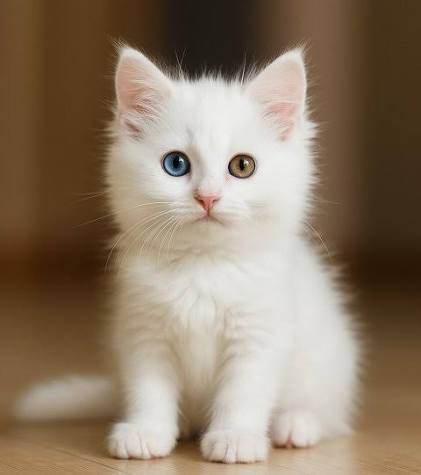

En Bilinen Kedi Irkları
Dünyada ve ülkemizde en çok sevilen bazı kedi cinsleri şunlardır:
-

Tekir: Ülkemizin sokaklarında en sık gördüğümüz,zeki ve hareketli kedilerdir. -
British Shorthair: Top gibi yuvarlak yüzü ve kalın,gri tüyleriyle bilinen sakin bir ırktır. -

Van Kedisi: Farklı renklerdeki gözleri (biri mavi,biri kehribar) ve suya olan düşkünlüğü ile ünlüdür. -
Ankara Kedisi: İpeksi, uzun beyaz tüyleri ve zarif duruşuyla bilinen, ülkemizin en köklü kedi ırklarından biridir.
Daha fazla bilgi için Wikipedia Kedi Sayfası'nı inceleyebilirsiniz.